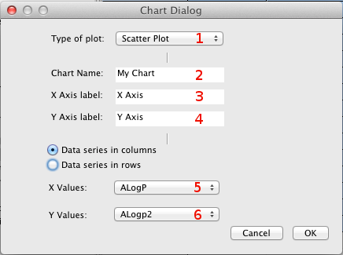
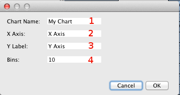

The matrix editor
The matrix editor is a simple spread sheet for opening and edit e.g. csv-files, and for opening matrixes created in the JavaScript console. It is also possibly to create plots that are viewed in the chat view from the matrix editor.
Row and column headers
In some cases the data file has in the top row and/or the first (i.e. the left-most) data that is can be interpreted as column and/or row headers, e.g. the name of the properties, names of the molecules that is associated with the properties. If no row- or column-headers are set, then the column will be labeled A, B, C etc, and the rows will be numbered (i.e labeled 1, 2 ,3 etc), just as in e.g. Excel.
To be able to add the top row and the left column as column- respectively row-headers there are two toggle-buttons on Bioclipses toolbar, that are visibly when the matrix editor is active. To use the left column as row-header, or if it already have row-headers, let it be the first column, just click on the right-most button in the toolbar (when the matrix editor is active). To let the top row in the matrix editor jump up as column heder, or if the already are a column-header, move it down as top row just click on the button that are second from the right in the toolbar. The row and column headers can also be set from the pop-up menu in the matrixeditor. from It might be worth to notice that sometimes the matrix editor can in some cases guess if a file has row and column headers, and then set them automatic.
Plot from the matrix editor
To plot from the matrix editor just select the data that are to be plotted and right click on the selection, then choose the wanted plot type from the submenu under chart in the pop-up menu. When plotting data from the matrix editor it's possibly to choose between four different types of diagram: Histogram, line plot, scatter plot and box plot. The creation of histograms and box plots differs from the other plot-types and will therefor be discussed in own sections below.
Plot one column
When all the selected values are from the same column, then the values of the cells will be plotted in respect to which row they originated from. I.e. the value of the cell will be on the y-axis and the row it is located on will be on the x-axis. The label on the y-axis will be the same as the column header (or the letter that is above that column if it don't have any column header). The x-axis label will in this case be just "Row" and then the axis will numerated from the start row to the last row of the plotted values. If one (or more) of the cells don't contain a number then an error message will be shown and only the cells with containing a number will be plotted.
Plot two columns
If the selected values instead are from two separate columns then the values from the left-most, let us call that "column 1", of the columns will be plotted in respect to the those in right-most column, "column 2" from now on. I.e. the x-values in the plot will originate from column 1 and the y-values from column 2. The x-label will be the column header of column 1 and, the label on the y-axis will be the row header of column 2. If the columns don't have any headers the letters on the top of the columns are used.

Plot several columns
If the values from more than two columns are selected then the dialog with more advanced options for the plot appear. The dialog, shown to the right, have the following settings: In the top there is a menu from wich it is possibly to change the type of plot (1). Beneath that are three fields, where the title of the plot (2), the label of x-axis (3) and y-axis (4) can be set. The two settings at the bottom are from which column the x-values (5) and the y-values (6) to the plot will be taken.
The histogram

When a histogram is to be plotted the dialog to the right appears. It has four different settings they are, beginning with the one at the top and moving down, the title of the histogram (1), the label on the x-axis (2) and on the y-axis (3). And the last one is the number of bins (4) that the data will be divided into.
The Box plot
The box plot differs in that way that it will create one box per column made up of the data from that column. The column header will be visibly beneath each box along the x-axis.
Selections and the values in properties view
Since a selection in of one or more cells in matrix editor don't generate any thing in the properties view this sections will be about selections in a plot plotted with data from the matrix editor. When a plot has been made an then a selection in the matrix editor will high-light the corresponding point in the chart.
Selections made in the chart (see also the section about selection and zooming in the chart view help) will both high-light the corresponding cell(s) in the matrix editor and make a summation in the properties view. What is shown in the properties view depends on whether there's one or several points has been selected in the chart. For the case where two or more points have been selected, then the properties view will show (from the top row and down) the average value of the points, maximum value along the points, the minmum value and the number of points selected. If only one point is selected then the properties view will show the x- and y-values of the point together with the name of the labels. In both the cases the properties view will show the name of file (source) that the plotted values are from. Observe that the labels of values are sorted in the alphabetic order, here-since the order of the vales when one point is selected will depend on the x- and y-labels of the chart.
The histogram
Just as the process of creating a histogram differs from the other plots, so dose what happens when selecting in a histogram. Of cause it also makes high-lighting in the matrix editor, but instead of just the cell(s) that are involved in the selected bar it high-lights the hole row from wich the cell(s) originates from. Multi-selection, i.e. the ability to select more than one bar, is not supported in the histogram. Also what is shown in the in the properties view differ. As for a selection of several points in an other chart type the histogram reports the number of values that are involved in creating the bar and the name of the file (i.e. the source) that where used for creating the histogram. The properties on the first and second row is called max- and min-value, and are the highest (i.e. max) and lowest (i.e. min) value that the selected bar has on the x-axis.
The Box plot
The box plot does not support selections, neither does it update the properties view at the moment.